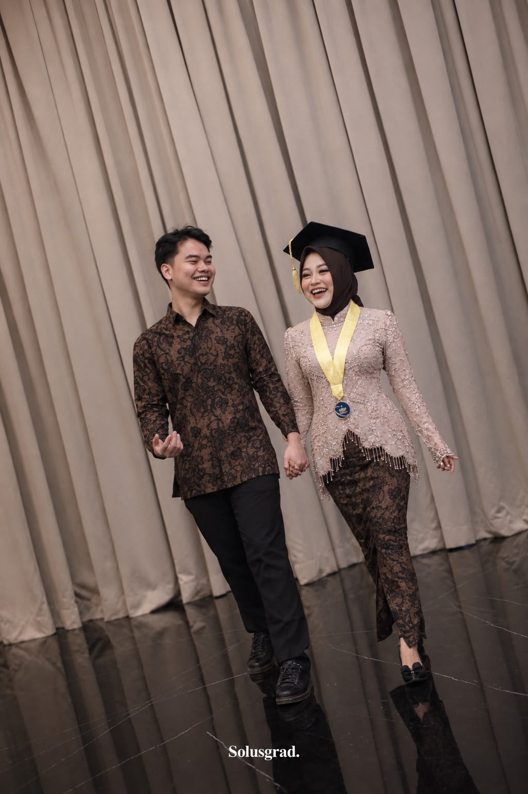
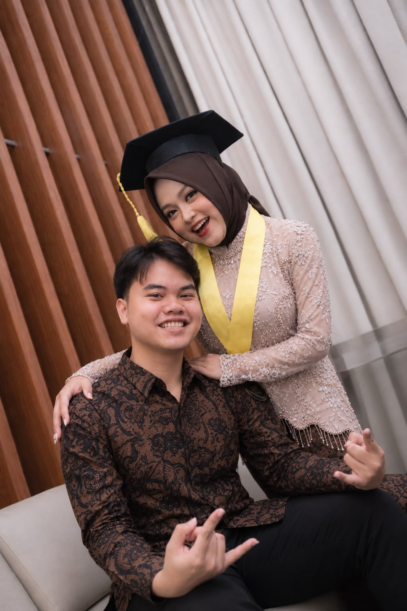

Nyaman
Senang rasanya punya seseorang yang bisa diajak cerita, ketawa, dan jadi diri sendiri.
ARSIP RAHASIA TERKUNCI ✦
Katanya cinta kita udah aku gembok, terus kuncinya aku buang ke laut... 🌊
Eh ternyata aku masi nyimpen satu kunci cadangan nya 🤎
A LITTLE CORNER JUST FOR US ✦
Sedikit cerita, banyak rasa sayang, dan kenangan yang pengin aku simpan baik-baik. 🤎
Buka pesan kecil ♡made with love, just for you ☕

A SOFT REMINDER
Nggak perlu alasan rumit buat sayang sama seseorang. Kadang, hal sederhana justru paling berarti.
Senang rasanya punya seseorang yang bisa diajak cerita, ketawa, dan jadi diri sendiri.
Perhatian sederhana kadang bikin hari biasa terasa jauh lebih hangat.
Semoga masih ada banyak momen baik yang bisa kita ceritakan nanti.
OUR MEMORY BOOK 📸
Momen ini layak disimpan di tempat yang spesial.

Semoga kita selalu punya waktu untuk merayakan hal-hal kecil, saling mendukung, dan bikin kenangan baru.
with love, always ✦PSSST... BUAT KAMU ♡
Setiap tombol punya pesan kecil. Coba semuanya, jangan cuma satu wkwk.
Pesan rahasiamu bakal muncul di sini, hehe.
Pencet kucingnya dong, katanya ada pesan buat kamu!
ARSIP YANG AKU SIMPAN 🔐
Ternyata aku masi simpan 1 kunci nya swenggg. Sekarang waktunya buat ncenggg buka.🤎
OUR LITTLE SOUNDTRACK
.